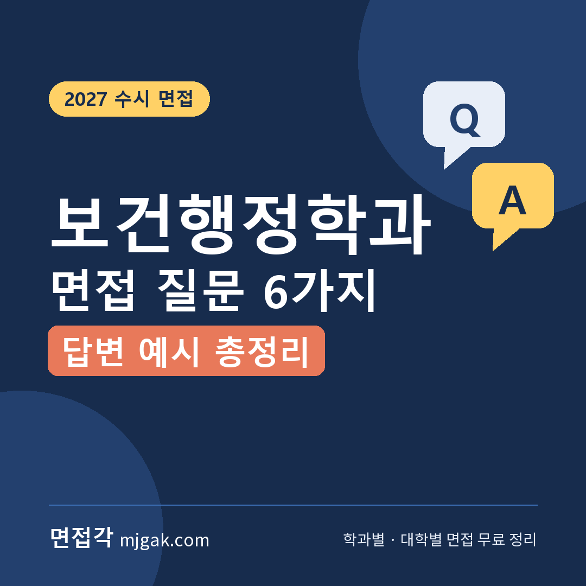
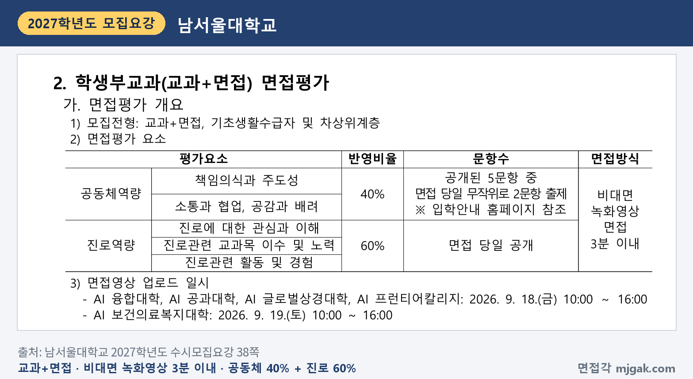
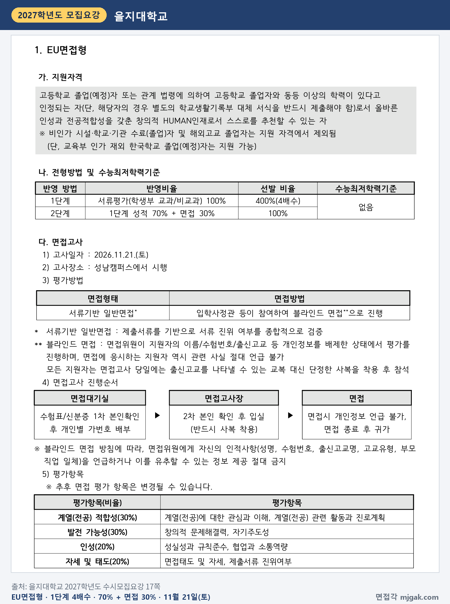
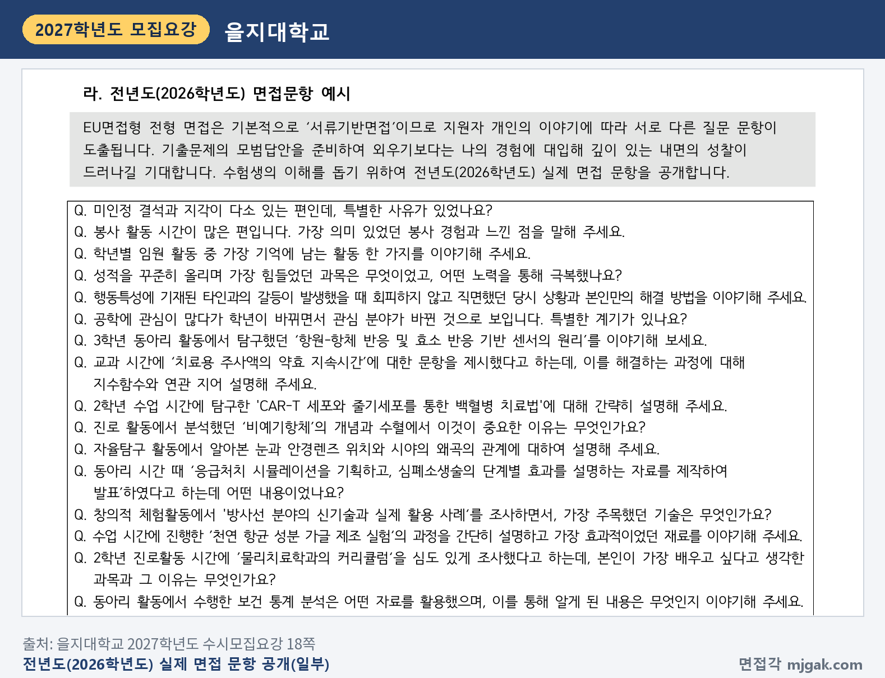
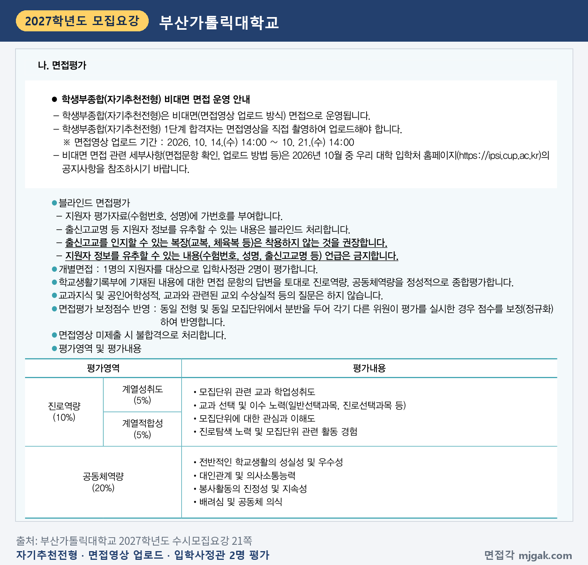
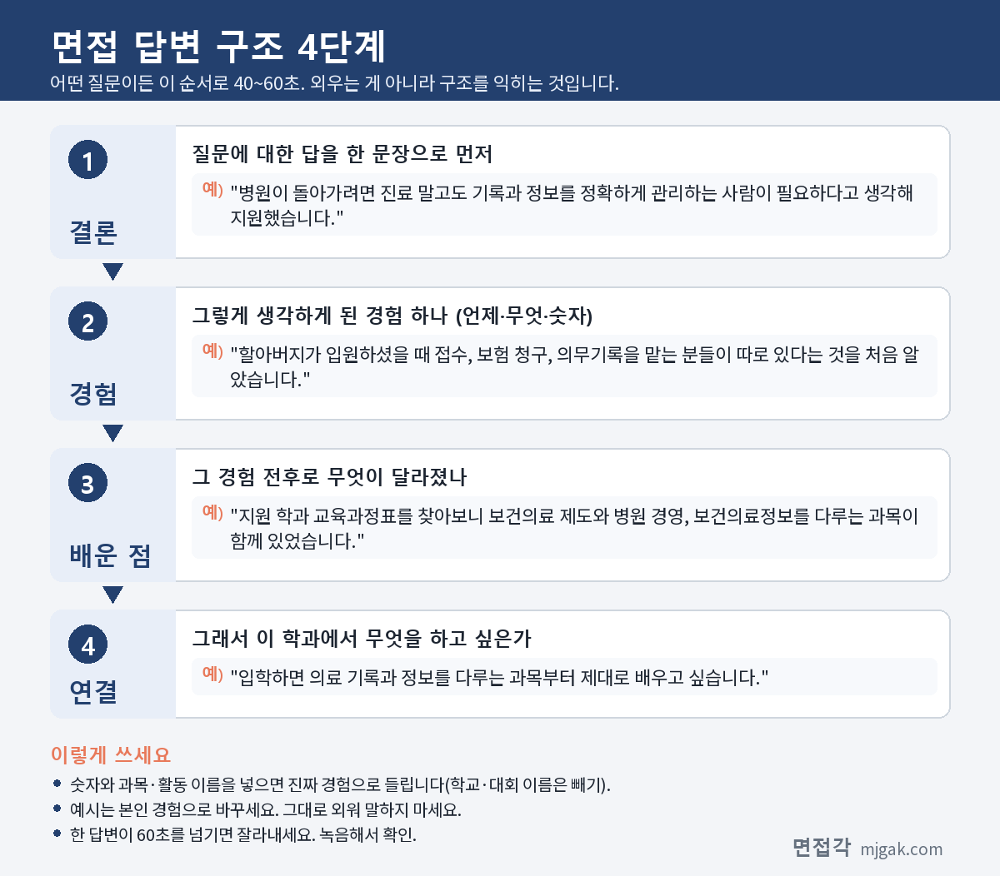

Ctrl+V (서식 유지됨)제목
본문 (이 영역 전체가 복사됩니다)
📷 여기에 이미지 넣기 — 썸네일 — thumb-healthadm.png (대표 이미지로 지정)
보건행정학과 면접을 준비할 때 먼저 정리할 것은 학과와 연결된 자격의 범위입니다. 의료기사 등에 관한 법률은 보건의료정보관리사를 의료 및 보건지도 등에 관한 기록과 정보의 분류·확인·유지·관리를 주된 업무로 하는 사람으로 정하고, 국가시험 응시는 교육과정 인증을 받은 대학에서 정해진 교과목을 이수한 사람에게 열어 둡니다. 지원 학과가 어떤 과목을 가르치는지, 인증을 받았는지부터 확인하세요. 이 글은 보건행정학과(대학에 따라 의료경영학과·병원경영학과) 면접 질문 6가지와 답변 예시, 2027학년도 모집요강 세 곳의 면접 방식과 날짜, 을지대가 공개한 전년도 면접 문항, 답변 4단계, 2주 준비 순서, 자주 묻는 것들까지 정리했습니다. 수시로 보건행정 계열 학과에 지원한 고3과 재수생, 2028학년도를 준비하는 고2가 읽으시면 됩니다.
1. 보건행정학과 면접, 2027학년도에는 어떻게 보나
2027학년도 수시모집요강에서 보건행정 계열 모집단위(보건행정학과·의료경영학과·병원경영학과)가 면접을 보는 것을 확인한 세 대학입니다. 남서울대·부산가톨릭대는 녹화영상을 올리는 비대면 면접, 을지대는 대면 서류기반 면접입니다.
남서울대학교 학생부교과 교과+면접전형 보건행정학과는 15명을 뽑습니다. 교과 60%에 면접 40%를 일괄 합산하고, 수능 최저학력기준은 없습니다(27쪽). 면접은 3분 이내의 비대면 녹화영상 면접입니다. 공동체역량 40%(책임의식과 주도성, 소통과 협업, 공감과 배려)는 공개된 5문항 중 당일 무작위 2문항으로, 진로역량 60%(진로에 대한 관심과 이해, 진로관련 교과목 이수 및 노력, 진로관련 활동 및 경험)는 당일 공개되는 문항으로 봅니다. 이름·수험번호·고교명·교복 표찰 등이 화면이나 음성으로 드러나면 면접점수가 0점입니다(38쪽). 보건의료복지대학 영상 업로드는 9월 19일(토) 10:00~16:00로 이미 끝났습니다(7·38쪽).
📷 여기에 이미지 넣기 — 캡처 1 — 남서울대학교 2027학년도 수시모집요강 38쪽: namseoul-2027-healthadm-video.png
을지대학교 학생부종합 EU면접형 의료경영학과는 4명을 뽑습니다(7쪽). 1단계 서류 100%로 4배수, 2단계는 1단계 성적 70%에 면접 30%이고 수능 최저는 없습니다. 면접은 "서류기반 일반면접"으로 제출서류를 기반으로 서류 진위 여부를 종합적으로 검증하고, 입학사정관 등이 참여하는 블라인드 면접으로 진행합니다. 평가 항목은 계열(전공) 적합성 30%, 발전 가능성 30%, 인성 20%, 자세 및 태도 20%입니다(17쪽). 면접 대상자·고사장 발표는 11월 18일(수), 면접은 11월 21일(토) 성남캠퍼스입니다(11·17쪽).
📷 여기에 이미지 넣기 — 캡처 2 — 을지대학교 2027학년도 수시모집요강 17쪽: eulji-2027-healthadm-interview.png
을지대는 모집요강 18쪽에 2026학년도 실제 면접 문항 예시를 공개했습니다. 모집단위는 표시돼 있지 않지만, 그중에는 "동아리 활동에서 수행한 보건 통계 분석은 어떤 자료를 활용했으며, 이를 통해 알게 된 내용은 무엇인지 이야기해 주세요."처럼 보건 자료를 다룬 활동을 묻는 문항도 있습니다. 요강은 EU면접형이 '서류기반면접'이라 지원자 개인의 이야기에 따라 서로 다른 질문 문항이 나온다고 설명합니다.
📷 여기에 이미지 넣기 — 캡처 3 — 을지대학교 2027학년도 수시모집요강 18쪽: eulji-2027-healthadm-questions.png
부산가톨릭대학교 학생부종합 자기추천전형 병원경영학과는 3명이고, 모집요강은 이 학과를 한국보건의료정보관리교육평가원 평가·인증 획득 학과로 표시했습니다(5쪽). 1단계 서류 100%로 5배수, 2단계는 1단계 성적 70%에 면접 30%이며 수능 최저는 없습니다(20쪽). 면접은 1단계 합격자가 면접영상을 직접 촬영해 올리는 비대면 면접이고, 학교생활기록부 내용에 대한 문항을 입학사정관 2명이 블라인드로 평가합니다. 영상을 내지 않으면 불합격입니다. 면접 평가는 전형 총점 기준 진로역량 10%(계열성취도 5%, 계열적합성 5%)와 공동체역량 20%입니다(21쪽). 1단계 발표는 10월 14일(수) 14:00, 영상 업로드는 10월 14일(수) 14:00~21일(수) 14:00, 영상 평가는 10월 25일(일)로 모두 끝났습니다(6쪽).
📷 여기에 이미지 넣기 — 캡처 4 — 부산가톨릭대학교 2027학년도 수시모집요강 21쪽: cup-2027-healthadm-interview.png
세 대학을 나란히 놓으면 방향이 보입니다. 남서울대(9월 19일 영상 업로드)와 부산가톨릭대(10월 25일 영상 평가) 면접은 이미 끝났으니, 2027학년도 방식을 보여 주는 참고 자료로 보시고 2028학년도 지원자는 새 모집요강에서 다시 확인하세요. 2027학년도 수시에서 남은 곳은 11월 21일(토) 을지대입니다. 을지대와 부산가톨릭대는 학생부를 바탕으로 묻는 면접이라, 내 학생부의 활동을 쓴 자료와 알게 된 것까지 설명하는 준비가 중심입니다. 세 곳 모두 해당 전형에 수능 최저가 없습니다. 참고로 단국대(천안) 보건행정학과는 2027학년도 수시에서 면접 없이 학생부(교과 또는 서류)로만 뽑습니다. 지원 대학의 정확한 방식과 날짜는 반드시 해당 대학 모집요강에서 다시 확인하세요.
2. 보건행정학과 면접 질문 6가지와 답변 예시
예시 답변은 답변 구조를 보여 주기 위한 가상의 예시입니다. 그대로 외우지 말고 본인 경험으로 바꿔 쓰세요. 공통 원칙은 하나입니다. "학과 이름으로 짐작하지 말고, 지원 대학 교육과정과 법에 적힌 사실을 근거로 말한다."
▶ 질문 1. 보건행정학과를 지원한 이유는 무엇인가요? 이 학과에서 무엇을 배운다고 알고 있나요?
왜 묻나: 지원 동기와 학과 이해를 함께 묻는 질문입니다. 을지대는 계열(전공) 적합성 평가항목을 "계열(전공)에 대한 관심과 이해, 계열(전공) 관련 활동과 진로계획"으로, 남서울대는 진로역량을 "진로에 대한 관심과 이해"로 적었습니다.
답변 구조: 계기가 된 구체적 경험 → 지원 대학 교육과정에서 확인한 과목 → 가장 관심 있는 분야 → 입학 후 계획.
답변 예시:
"할아버지가 입원하셨을 때 병원에서 진료 말고도 접수, 보험 청구, 의무기록을 맡는 분들이 따로 있다는 것을 처음 알았습니다. 그 뒤 지원 학과 교육과정표를 찾아보니 보건의료 제도와 병원 경영, 보건의료정보를 다루는 과목이 함께 있었습니다. 저는 그중 의료 기록과 정보를 정확하게 관리하는 일에 가장 관심이 생겼고, 입학하면 관련 과목을 먼저 제대로 배우고 싶습니다."
주의: 교육과정은 대학마다 다릅니다. 과목 이름은 반드시 지원 대학 교육과정표에서 확인한 것만 말하세요.
▶ 질문 2. 보건의료정보관리사는 어떤 일을 하나요?
왜 묻나: 학과와 연결된 자격을 알고 지원했는지 확인하는 질문입니다. 부산가톨릭대 진로역량의 "모집단위에 대한 관심과 이해도"와 이어집니다.
답변 구조: 법에 적힌 정의 → 구체적인 업무 한두 가지 → 응시 요건(교육과정 인증) → 내 관심.
답변 예시:
"의료기사 등에 관한 법률은 보건의료정보관리사를 의료 및 보건지도 등에 관한 기록과 정보의 분류·확인·유지·관리를 주된 업무로 하는 사람으로 정하고 있습니다. 한국보건의료인국가시험원 안내를 보니 보건의료정보 분석, 암 등록, 진료통계 관리, 질병·사인·의료행위 분류 같은 일이 있었습니다. 국가시험은 교육과정 인증을 받은 대학에서 정해진 교과목을 이수해야 응시할 수 있다는 것도 확인했습니다. 저는 그중 질병 분류 업무에 관심이 있습니다."
주의: 보건행정학과를 졸업하면 누구나 응시할 수 있다고 말하면 틀립니다. 인증 요건을 정확히 말하세요.
📷 여기에 이미지 넣기 — 이미지 1 — 제미나이 생성: 병원 원무·의료기록실 느낌의 밝은 사무 공간에서 라벨 없는 색색 파일철·클립보드·청진기 옆에서 답하는 여학생(실사) / "제미나이 프롬프트 1"
(AI로 만든 이미지로, 실제와 다를 수 있습니다)
▶ 질문 3. 병원 창구에서 오래 기다린 보호자가 화를 낸다면 어떻게 하겠습니까?
왜 묻나: 민원 상황에서의 소통 태도를 묻는 상황 질문입니다. 남서울대는 공동체역량에 "소통과 협업, 공감과 배려"를, 을지대는 인성에 "협업과 소통역량"을 적었습니다.
답변 구조: 먼저 사과하고 사정을 듣는다 → 상황을 확인한다 → 남은 순서와 시간을 정확히 안내한다 → 같은 일이 반복되지 않게 공유한다.
답변 예시:
"먼저 오래 기다리시게 한 점을 사과드리고, 어떤 일로 오셨는지 끝까지 듣겠습니다. 그다음 접수 상태를 확인해 앞에 몇 분이 남았는지, 대략 얼마나 걸리는지를 정확히 말씀드리겠습니다. 제가 바로 해결할 수 없는 부분이면 담당자에게 넘기고 다시 안내드리겠습니다. 끝나고 나서는 대기가 길어진 이유를 동료들과 공유해 같은 일이 반복되지 않게 하겠습니다."
주의: "참고 웃으며 응대하겠다"에서 끝나면 구체성이 부족합니다. 확인 → 안내 → 재발 방지까지 말하세요.
▶ 질문 4. 환자의 의료 기록을 다룰 때 가장 조심해야 할 점은 무엇이라고 생각하나요?
왜 묻나: 개인정보와 직업윤리에 대한 생각을 묻는 질문입니다. 을지대 인성 평가항목(성실성과 규칙준수)과 이어집니다.
답변 구조: 가장 중요한 원칙(비밀 유지) → 법 근거 → 내 경험 → 다짐.
답변 예시:
"업무상 알게 된 정보를 밖으로 말하지 않는 것이 가장 중요하다고 생각합니다. 의료기사 등에 관한 법률에도 보건의료정보관리사를 포함한 의료기사등이 업무상 알게 된 비밀을 누설하면 안 된다는 조항이 있다는 것을 찾아봤습니다. 학급 반장을 하며 상담 신청서를 걷을 때 친구들의 사정을 알게 됐지만, 담임선생님께만 전달하고 누구에게도 말하지 않았습니다. 작은 정보라도 그 사람의 것이라는 생각으로 다루겠습니다."
주의: 법 조항을 말할 때는 법 이름을 정확히 말하세요. 모르면 "찾아본 바로는" 정도로만 말하는 편이 안전합니다.
▶ 질문 5. 학생부에 적힌 활동 중 이 학과와 가장 관련 있는 것은 무엇이고, 무엇을 배웠나요?
왜 묻나: 서류(학생부) 기반 질문입니다. 을지대 EU면접형은 제출서류를 기반으로 서류 진위 여부를 종합적으로 검증하는 서류기반 일반면접이고, 부산가톨릭대 자기추천전형은 학교생활기록부 내용에 대한 문항으로 면접을 봅니다.
답변 구조: 활동 이름과 시기 → 내가 한 일과 쓴 자료 → 알게 된 것 → 그 뒤 이어진 행동 → 학과와의 연결.
답변 예시:
"2학년 사회문화 시간에 우리 지역 보건소 이용 현황을 주제로 탐구 보고서를 썼습니다. 지자체 누리집의 공개 자료를 표로 정리하면서, 같은 숫자라도 어떻게 묶어 보느냐에 따라 읽히는 내용이 달라진다는 것을 처음 느꼈습니다. 자료를 정확하게 관리하는 일이 정책의 출발점이라는 생각이 들어, 그 뒤 보건의료 제도에 관한 책을 찾아 읽으며 진로를 보건행정으로 정했습니다."
주의: 학생부에 없는 내용을 꾸미거나 부풀리지 마세요. 조사에 쓴 자료의 출처를 물어볼 수 있으니 기억해 두세요.
▶ 질문 6. 모둠 활동에서 맡은 일을 끝까지 해낸 경험을 말해 보세요.
왜 묻나: 책임감과 협업 경험을 묻는 질문입니다. 남서울대는 공동체역량에 "책임의식과 주도성"을, 을지대는 인성에 "성실성과 규칙준수, 협업과 소통역량"을 적었습니다.
답변 구조: 상황 → 내가 맡은 일 → 어려움 → 내가 한 행동 → 결과와 배운 점.
답변 예시:
"학교 축제 부스 운영에서 저는 예산과 물품 관리를 맡았습니다. 행사 사흘 전 재료비가 예상보다 많이 나와 예산이 모자랐는데, 지출 내역을 표로 정리해 팀원들에게 보여 주고 꼭 필요한 물품만 남기자고 제안했습니다. 덕분에 예산 안에서 행사를 마쳤고, 남은 돈과 영수증을 정리해 담당 선생님께 제출했습니다. 기록을 정확히 남기는 일이 모두의 신뢰를 지킨다는 것을 배웠습니다."
주의: 팀 전체 성과보다 내가 맡은 몫과 내가 한 행동이 드러나게 말하세요.
3. 답변은 이 4단계로 만드세요
어떤 질문이든 결론 → 경험 → 배운 점 → 연결, 이 순서로 40~60초 안에 말하면 됩니다. 남서울대처럼 3분 이내 영상 면접이라면 한 문항에 쓸 시간을 미리 정해 두세요(38쪽). 아래 도식은 질문 1을 4단계로 쪼갠 것입니다.
📷 여기에 이미지 넣기 — 도식 — structure-healthadm.png
4. 보건행정학과 면접 준비 순서 (2주 계획)
1~2일차: 지원 대학 모집요강에서 면접 방식을 확인합니다. 대면인지 영상인지, 면접 시간(남서울대 3분 이내), 비중(30~40%), 평가 항목, 날짜, 블라인드 규정을 적어 둡니다. 남서울대처럼 공동체역량 문항을 미리 공개하는 대학은 그 문항부터 답을 만듭니다.
3~4일차: 질문 1(지원 동기와 학과 이해)을 완성합니다. 지원 대학 교육과정표에서 과목 이름 두세 개를 확인해 넣고, 40~60초로 맞춥니다.
5~6일차: 질문 2와 4를 준비합니다. 법에 적힌 정의와 응시 요건(교육과정 인증), 비밀누설 금지 조항을 정확한 이름으로 외웁니다. 지원 학과가 인증을 받았는지도 확인합니다.
7~8일차: 학생부를 다시 읽고 학과와 관련된 활동마다 "한 일 → 쓴 자료 → 배운 점 → 그 뒤 행동"을 한 줄씩 적습니다. 을지대 EU면접형처럼 제출서류를 기반으로 묻는 대학을 대비합니다.
9~10일차: 질문 3과 6을 비슷한 상황 몇 가지로 바꿔 연습합니다. 서류를 잃어버렸다는 민원, 팀원이 맡은 일을 하지 않는 경우처럼요.
11~12일차: 시간을 재며 모의 면접을 합니다. 영상 면접이라면 실제로 촬영해 보고, 화면에 이름·학교·교복 표찰이 보이지 않는지 확인합니다.
전날: 새 답변을 만들지 않습니다. 수험표·신분증을 챙기고 모집요강의 블라인드·복장 규정을 다시 확인한 뒤 일찍 잡니다.
5. 보건행정학과 면접은 언제 보나
날짜순으로 정리하면 이렇습니다.
- 9월 19일(토) 10:00~16:00: 남서울대 교과+면접전형 보건의료복지대학 영상 업로드(종료)
- 10월 14일(수) 14:00: 부산가톨릭대 자기추천전형 1단계 발표(종료)
- 10월 14일(수) 14:00~21일(수) 14:00: 부산가톨릭대 면접영상 업로드(종료)
- 10월 25일(일): 부산가톨릭대 면접영상 평가(종료)
- 11월 18일(수): 을지대 EU면접형 면접 대상자·고사장 발표
- 11월 19일(목): 수능
- 11월 21일(토): 을지대 EU면접형 면접, 성남캠퍼스(수능 이틀 뒤)
을지대 지원자는 수능 전에 답변 초안을 끝내고, 수능 뒤 이틀은 소리 내어 훑어보기만 하세요.
6. 보건행정학과 면접 자주 묻는 것들
Q. 보건행정학과를 졸업하면 보건의료정보관리사 국가시험을 볼 수 있나요?
A. 학과 이름만으로 정해지지 않습니다. 의료기사 등에 관한 법률 제4조는 인정기관의 보건의료정보관리사 교육과정 인증을 받은 대학에서 보건의료정보 관련 학문을 전공하고 보건복지부령으로 정하는 교과목을 이수해 졸업한 사람이 국가시험에 응시할 수 있다고 정합니다. 지원 학과가 인증을 받았는지 학과·입학처에 확인하세요. 부산가톨릭대 모집요강은 병원경영학과를 한국보건의료정보관리교육평가원 평가·인증 획득 학과로 표시했습니다(5쪽).
Q. 보건의료정보관리사 국가시험은 누가 시행하나요?
A. 국가시험은 보건복지부장관이 실시하고, 한국보건의료인국가시험원이 관리할 수 있도록 법에 정해져 있습니다(의료기사 등에 관한 법률 제6조). 시험 일정 같은 세부 사항은 국시원 홈페이지의 직종별 시험정보에서 확인하세요.
Q. 보건행정학과, 의료경영학과, 병원경영학과는 다른 학과인가요?
A. 대학에 따라 보건의료 분야의 행정·경영과 보건의료정보 관리를 배우는 학과를 보건행정학과·의료경영학과·병원경영학과 등의 이름으로 모집합니다. 학과 이름으로 짐작하지 말고 지원 대학 교육과정표와 인증 여부를 확인해 말하세요.
Q. 수능 최저가 있나요?
A. 남서울대 교과+면접전형(보건행정학과), 을지대 EU면접형(의료경영학과), 부산가톨릭대 자기추천전형(병원경영학과)은 수능 최저가 없습니다(27·17·20쪽). 대학과 전형마다 다르니 지원 전형별로 확인하세요.
Q. 면접 복장이나 블라인드 규정이 있나요?
A. 남서울대는 녹화영상에 이름·수험번호·고교명·교복 표찰·부모 신분 등이 화면이나 음성으로 드러나면 면접점수를 0점 처리합니다(38쪽). 을지대 모집요강은 "모든 지원자는 면접고사 당일에는 출신고교를 나타낼 수 있는 교복 대신 단정한 사복을 착용 후 참석"이라고 정하고, 면접 진행순서에도 "(반드시 사복 착용)"이라고 적었습니다. 면접 때 개인정보 언급도 금지합니다(17쪽). 부산가톨릭대는 교복·체육복 등 출신고교를 알 수 있는 복장을 입지 않을 것을 권장합니다(21쪽).
7. 면접 전날 체크리스트
□ 지원 동기를 "경험 → 교육과정에서 확인한 과목 → 관심 분야"로 60초 안에 말할 수 있다
□ 보건의료정보관리사의 법적 정의와 업무 한두 가지를 말할 수 있다
□ 국가시험 응시 요건(교육과정 인증)과 지원 학과의 인증 여부를 확인했다
□ 의료 기록의 비밀 유지 원칙을 법 이름과 함께 말할 수 있다
□ 민원 상황 질문에 "사과·경청 → 확인 → 안내 → 재발 방지" 순서로 답할 수 있다
□ 학생부의 학과 관련 활동마다 한 일·쓴 자료·배운 점을 말할 수 있다
□ 지원 대학 면접 형식(대면·영상, 시간, 비중)과 날짜, 블라인드 규정을 확인하고 수험표·신분증을 챙겼다
8. 같은 시기에 면접 보는 대학
을지대 EU면접형 면접일(11월 21일 토요일)과 같은 날 면접을 보는 대학입니다.
▷ 경북대 학생부종합 지역인재전형 면접 총정리 (11월 21일)
▷ 국민대 국민프런티어 면접 총정리 (11월 21일·22일)
9. 함께 보면 좋은 글
보건행정학과 면접은 병원에서 일하고 싶다는 마음을 말하는 데서 그치지 않고, 지원 학과에서 배울 것과 기록·정보를 정확하게 다뤄 온 내 경험을 확인한 사실로 설명하는 자리입니다.
※ 이 글의 모집요강 내용은 남서울대학교, 을지대학교, 부산가톨릭대학교 2027학년도 수시모집요강에서 인용했습니다. 괄호 안 쪽수는 각 모집요강에 인쇄된 쪽수입니다. 보건의료정보관리사 관련 내용은 의료기사 등에 관한 법률과 한국보건의료인국가시험원 안내를 바탕으로 정리했습니다. 질문 6가지는 평가 항목을 바탕으로 정리한 예상 질문이며, 을지대 공개 문항 외에는 대학이 공개한 질문이 아닙니다. 면접 방식과 일정은 바뀔 수 있으니 지원 대학 입학처 공지를 꼭 확인하세요.
보건행정학과를 포함한 71개 학과별 면접 질문·답변 예시와 76개 대학의 2027학년도 면접 정보, 대학이 공개한 실제 면접 기출을 무료로 정리한 사이트입니다. 회원가입 없이 바로 볼 수 있고, 질문을 무작위로 뽑아 60초 타이머로 연습하는 모의 면접도 있습니다.
태그 (#은 에디터가 자동으로 붙이므로 그대로 붙여 넣어도 됩니다)
넣을 이미지 목록 (docs/promo/img 폴더)






제미나이 프롬프트 1 — 병원 원무·의료기록실 느낌의 밝은 사무 공간에서 라벨 없는 색색 파일철·클립보드·청진기 옆에서 답하는 여학생(실사) (4:3) — 제미나이에 그대로 붙여 넣어 이미지를 만드세요